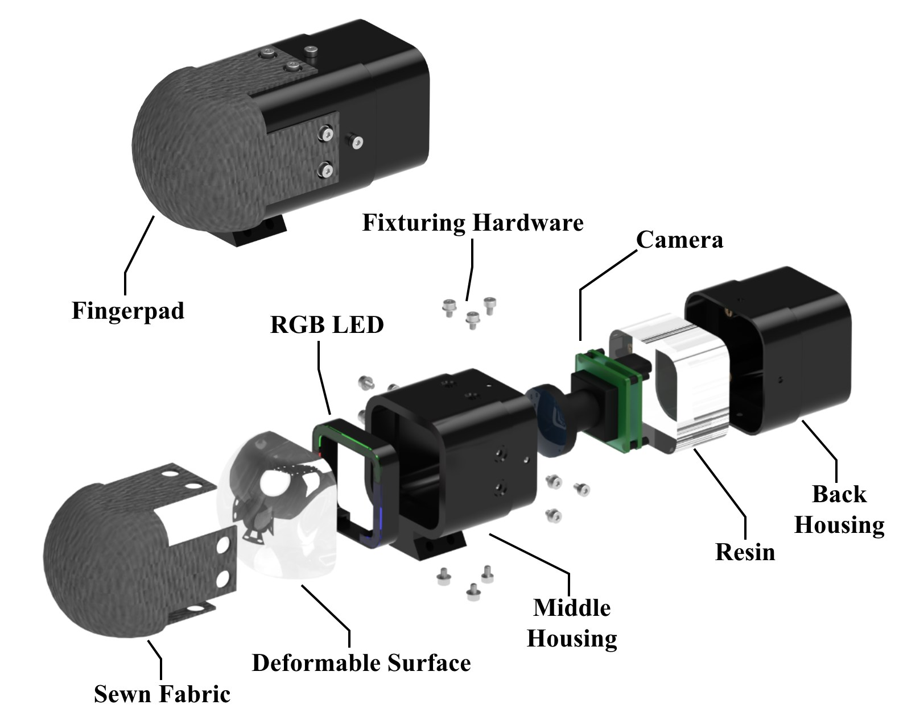
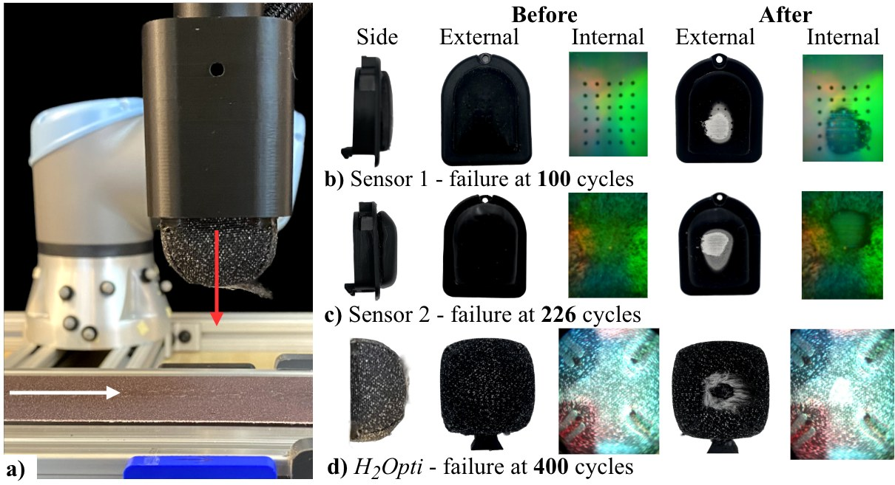
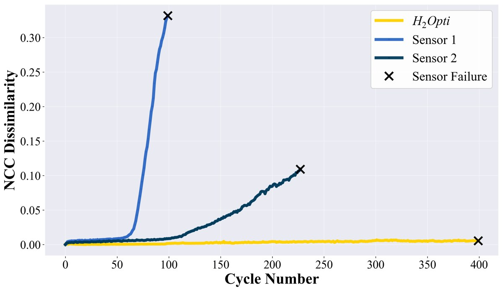
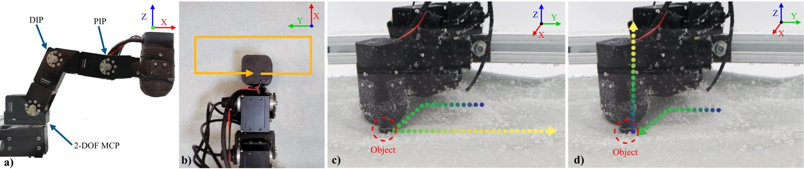
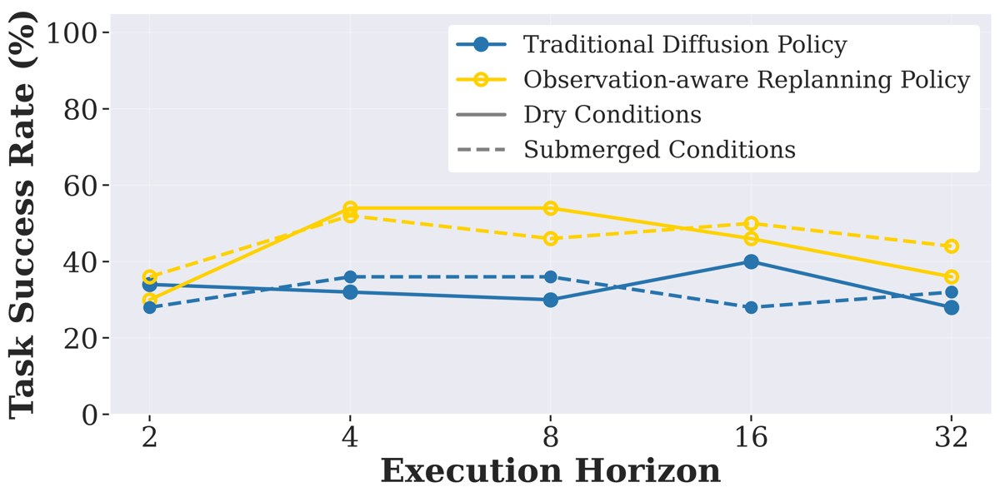

H2Opti: Underwater Tactile Sensing
A camera-based touch sensor covered in cut-resistant fabric so it survives sand, water and abrasion, plus a small change that helps diffusion policies notice contact.
My part: I designed the H2Opti sensor and its diffusion-policy haptic search.
The problem
Vision-based tactile sensors give robots a rich, high-resolution sense of touch, but their soft elastomer skins tear and wear quickly. That is a deal-breaker for field robotics, where touch matters most in exactly the places (murky water, sand, sharp debris) that destroy these sensors.
Worse, a worn sensor doesn’t just fail at the end; it slowly drifts. A learned policy that reacts to changes in the tactile signal can’t tell real contact apart from the sensor wearing out.
The sensor
H2Opti’s fingerpad is covered by a sewn layer of cut-resistant ultra-high molecular weight polyethylene (UHMWPE) fabric. The fabric does double duty: it armors the elastomer against abrasion and cuts, and its weave gives the internal camera natural features to track, with no printed markers needed.
The electronics are potted in optically clear resin, and the sensor stayed operational through a 72-hour submersion test.

Durability testing
I built a sandpaper treadmill test bed and used a UR5e to press each sensor into the belt at 5 N, cycle after cycle. To compare sensors fairly, I introduced normalized cross-correlation (NCC) dissimilarity between a sensor’s pristine internal image and its image after each cycle: a lighting-invariant measure of how much wear corrupts the tactile signal.


Against two DIGIT-style elastomer sensors built with the same camera, lighting and elastomer, H2Opti lasted 400 cycles, versus 100 and 226.
Observation-aware replanning
Diffusion policies normally commit to a fixed number of actions before looking again, so a brief contact event can slip by unnoticed. I developed observation-aware replanning (OAR): at every timestep the policy compares its current latent observation to the one it planned from, and replans immediately when the change crosses a threshold. It needs no extra training, networks or architecture changes; it lives entirely at inference time.

Policies were trained only on dry demonstrations, then evaluated both dry and fully submerged underwater.
OAR significantly outperformed standard diffusion policies in both conditions (44.0% vs. 31.2% task success dry; 45.6% vs. 32.0% underwater), and the same replanning threshold transferred underwater without re-tuning.

Videos
Patent: “Vision-Based Tactile Sensor with Fabric Layer,” U.S. Provisional Patent Application No. 63/915,657 (filed November 2025).